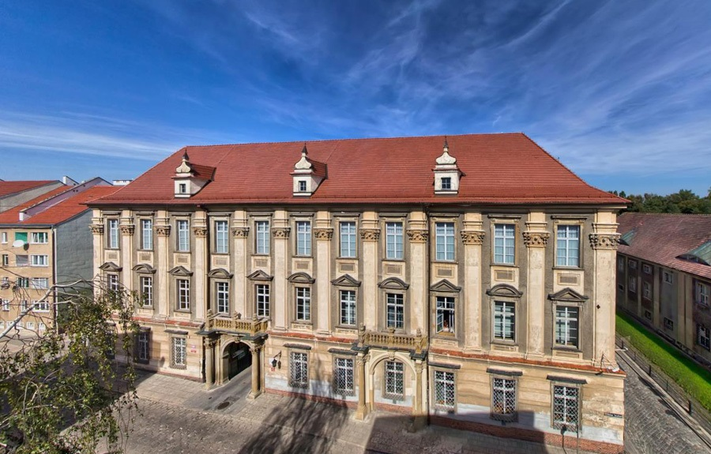

Muzeum Powiatowe
 Pierwsze muzeum w Nysie powstało w 1897 roku z inicjatywy Towarzystwa Sztuki i Starożytności w Nysie. Opiekę nad placówką – działającą jako Muzeum Sztuki i Starożytności – objęli biskupi wrocławscy, a na siedzibę przeznaczono budynek dawnej komendantury garnizonu nyskiego. Zbiory przedwojennego muzeum liczyły około 33 tysięcy eksponatów, a od 1932 roku przy placówce działał na Górnym Śląsku warsztat konserwacji zabytków. Podczas II wojny światowej trudności finansowe i organizacyjne Towarzystwa doprowadziły do przekazania muzeum miastu. Wobec nadciągającej ofensywy radzickiej część eksponatów zabezpieczono i wywieziono do Domaszowa koło Jesenika oraz do Przełęku. Eksponaty, które pozostały w gmachu muzeum zostały zniszczone w wyniku pożaru w marcu 1945 roku. Po zakończeniu działań wojennych przystąpiono do ponownej organizacji muzeum. Udało się sprowadzić zbiory z terenów Czechosłowacji, ekspozycję uzupełniono o zabytki z nyskich kościołów. w tym okresie zbiory muzeum wzbogaciły się o szereg eksponatów archeologicznych, odkrytych w trakcie odbudowy miasta ze zniszczeń wojennych. W 1984 roku muzeum przeniosło się do swej obecnej siedziby – Pałacu Biskupiego biskupów wrocławskich.